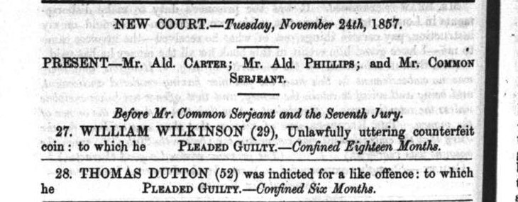
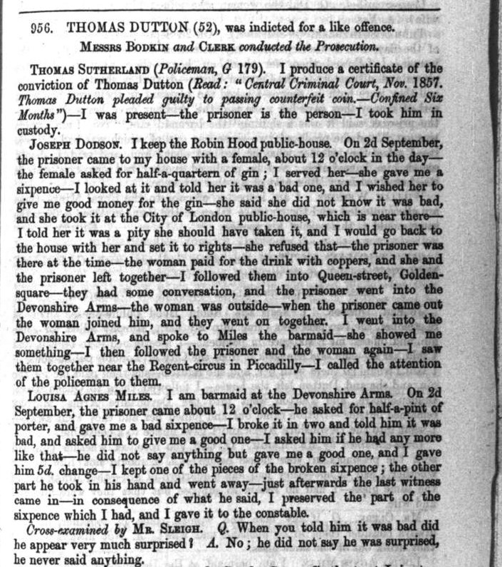
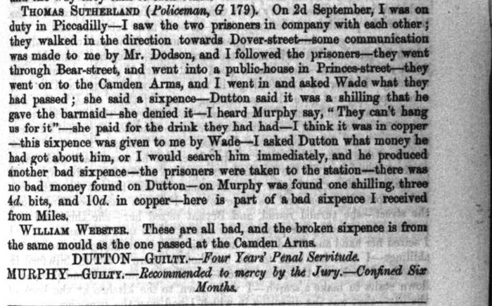

First written down on 24 November 1857, at the Old Bailey, London
Thomas Dutton
about 1805 to after 31 December 1861
A labourer in his fifties, married, with two children, who could not read or write. On one Thursday in September 1858 a publican and then a policeman followed him and a woman for about an hour through the streets between Golden Square and Leicester Square, as they paid for drinks with bad sixpences. Asked whether he had seemed surprised to be told a coin was bad, the barmaid said he never said anything.
Thomas Dutton first appears on Tuesday 24 November 1857, in the New Court at the Old Bailey, before the Common Serjeant and the seventh jury. The case before his was William Wilkinson’s, for unlawfully uttering counterfeit coin, and Thomas Dutton, aged fifty-two, was indicted “for a like offence.” He pleaded guilty and was confined six months.1 That is the whole of the report. A later certificate of the conviction, read out in court, says he pleaded guilty “to passing counterfeit coin,” and his licence of 1861 says the six months were served in a house of correction, without saying which.23

If he served the whole six months he was out by about the end of May 1858. On Thursday 2 September 1858, about twelve o’clock in the day, he came into the Robin Hood public house with a woman. Its keeper, Joseph Dodson, served her half a quartern of gin, and she paid with a sixpence. He told her it was bad. She said she had not known, and that she had taken it at the City of London public house, which was near. He offered to go back there with her and set it right; she refused, and paid for the gin in coppers. Thomas Dutton was standing there. Dodson said that the two of them drank out of the same glass.24
Dodson followed them out into Queen Street, Golden Square. They talked; Thomas Dutton went into the Devonshire Arms and the woman waited outside. There he asked the barmaid, Louisa Agnes Miles, for half a pint of porter, and gave her a sixpence. She broke it in two, told him it was bad, and asked whether he had any more like it. He did not say anything, but gave her a good one, and she gave him fivepence change. She kept one half of the broken coin; he took the other half in his hand and went away. Asked in court whether he had seemed very much surprised, she said: “No; he did not say he was surprised, he never said anything.”24
Dodson went into the Devonshire Arms, saw the broken coin, and followed the two again. Near Regent Circus in Piccadilly he pointed them out to a policeman, Thomas Sutherland, G 179. Sutherland followed them for about an hour: towards Dover Street, through Bear Street, into a public house in Princes Street, and on to a house near Leicester Square, which the barmaid called the Camden Stores, Castle Street, in one trial and the Camden Arms in the other.24
There, between one and two o’clock, Thomas Dutton asked the barmaid, Ann Wade, for a pint of stout (in the second trial, a pint of beer) and gave her a sixpence. She put it in the till, where there was one other sixpence. The woman came in and stood beside him. Then Sutherland came in and asked the barmaid what this man had given her. She said a sixpence. Thomas Dutton said it was a shilling. She looked in the till and found the two sixpences, one of them bad, and could not say which was his. Sutherland said he would search him immediately, and Thomas Dutton took out another bad sixpence himself. No bad money was found on him at the station. On the woman were found a shilling, three fourpenny pieces and tenpence in copper.24
The woman was Caroline Murphy. When the barmaid said the coin was bad, she said, “You shall not be at the loss of it, I will pay you,” and paid her in coppers. Sutherland heard her say, “They can’t hang us for it.”4
Whether she was his wife no record says. Both barmaid and publican were asked. Ann Wade said their conduct was like that of man and wife, “I judged that from the way in which they addressed each other—they drank out of the same pot.” Dodson said he had no reason to suppose they were not husband and wife, and, asked whether he always thought so of a man and woman who came in together, “Not always; not if they drink out of the same glass.”4 Three years later, the prison’s record of him says he was married, and names as his next of kin a Mary Vernon, of 7 Bridgewater Square, Barbican.3 Who she was to him it does not say.

He was committed for trial at the police court in Marlborough Street on Thursday 23 September, twenty-one days after the arrest.3 He was tried twice in the New Court on Tuesday 26 October 1858, the second day of the session, before the Common Serjeant and the sixth jury, with Mr Bodkin and Mr Clerk prosecuting. The first trial was his alone, for uttering counterfeit coin having been convicted before; Sutherland produced the certificate of 1857 and said, “the prisoner is the person—I took him in custody.” The second was his and Caroline Murphy’s, for uttering. A Mr Sleigh cross-examined in both; it was in cross-examination that the barmaid was asked whether he had seemed surprised, and the witnesses whether the two were man and wife. The inspector of coin to the Royal Mint, William Webster, said that the coins were all counterfeit, and that the half sixpence from the Devonshire Arms came from the same mould as the one passed at the Camden Arms.24
Both were found guilty. Thomas Dutton was sentenced to four years’ penal servitude. The jury recommended Caroline Murphy to mercy, and she was confined six months.4 The Proceedings give his age as fifty-two, the same as eleven months before.2

The only description of him is in his licence, which I have read as the Digital Panopticon transcribes it and not as a page. He was five feet six inches tall and “stoutish,” with a fair complexion, brown hair and light hazel eyes, an anchor on his right arm and a scar on his right cheek. He was a labourer, a Protestant, married, with two children, and could not read or write. His health in prison was “pretty good.”3 The Digital Panopticon files the anchor among naval tattoos;5 whether he had ever been at sea no record I have read says.
The same file lists his prisons. At Newgate he was held two months and ten days, in separate confinement, and his conduct was good. At Millbank he was held nineteen days; his conduct and his character were both good, his trade in the prison was “Picker,” and against his progress at school the clerk wrote: “Not here long enough to decide.”3 Where he was after Millbank the transcription does not say. Four entries in the quarterly returns of the convict prisons for 1858 carry his name, age and offence; I have read only their index.6
In dates
- About 1805. Born. He was fifty-two in November 1857, in October 1858, and in December 1861.
- 24 November 1857. Pleads guilty at the Old Bailey to passing counterfeit coin. Six months in a house of correction.
- 2 September 1858. Followed for about an hour from the Robin Hood to the Camden Arms with Caroline Murphy, and taken.
- 23 September 1858. Committed for trial at Marlborough Street police court.
- 26 October 1858. Tried twice at the Old Bailey. Four years’ penal servitude. Caroline Murphy gets six months.
- 1858 to 1861. Newgate, two months and ten days; Millbank, nineteen days; then Woking.
- 31 December 1861. Released on licence from Woking.
Records that are not him
- Thomas Dutton, 1812 (t18120219-79), tried with Isaac Crane, aged thirty-one. He was born about 1781.
- Thomas Dutton, 1821 (t18210411-4), a farm servant of Finchley tried for stealing a truss of hay, aged forty-four. Born about 1777.
- Thomas Dutton, 1803 (t18030706-5). Before he was born.
- Thomas Dutton, 1889 (t18891216-78), aged nineteen.
- A Thomas Dutton of twenty-five, convicted of larceny, in the quarterly returns for 1861 (fchTNA/CCC/HO8/0248658). The Digital Panopticon joins him to this life; the age and offence are wrong.
- The death of 1887 is doubtful, not rejected: see the last note.
Where the records disagree
- His age. Fifty-two in November 1857, October 1858 and December 1861. The licence index takes a birth year of 1809 from the last; the other records give 1806.
- The last public house. Ann Wade called it the Camden Stores, Castle Street, Leicester Square, in the first trial, and the Camden Arms in the second. The Mint’s inspector called it the Camden Arms.
- What he ordered there. A pint of stout in the first trial, a pint of beer in the second.
- The day of conviction. The Proceedings put his trials on 26 October 1858; the licence and the catalogue give 25 October, the day the session opened.
Not yet known
- Who Mary Vernon was, his next of kin in 1861, and whether she was his wife under another name, his daughter, or someone else. The 1861 census of 7 Bridgewater Square may show her.
- Whether Caroline Murphy was his wife, and what became of her after her six months.
- Where he was born. The licence as transcribed does not say, and the Newgate calendars and criminal registers (Find My Past, Ancestry) may.
- Who his two children were.
- Where he served the six months of 1857–58.
- What the licence pages themselves say, beyond the transcription: his prisons between Millbank and Woking, any marks against him, and whether it was revoked.
- Whether he is the Thomas Dutton who died in 1887, and where.
- Whether the anchor on his arm meant he had been a sailor.
Everyone named here
- Caroline Murphy, taken with him on 2 September 1858, who said “They can’t hang us for it,” and got six months.
- Mary Vernon, of 7 Bridgewater Square, Barbican, his next of kin in 1861.
- Joseph Dodson, keeper of the Robin Hood public house, who followed them.
- Louisa Agnes Miles, barmaid at the Devonshire Arms, Queen Street, Golden Square, who broke his sixpence in two.
- Ann Wade, barmaid at the Camden Stores or Camden Arms, near Leicester Square.
- Thomas Sutherland, policeman G 179, who said he was present at the conviction of 1857, and who took him in 1858.
- William Webster, inspector of coin to the Royal Mint.
- Mr Bodkin and Mr Clerk, for the prosecution, and Mr Sleigh, who cross-examined.
- William Wilkinson and James Kemp, whose cases came just before his in 1857 and 1858.
If this is your family
If Thomas Dutton, or anyone named on this page, belongs to your family, the library would like to know what the family remembers: a story, a photograph, a name written in a Bible. It will be kept here beside what the records say, and marked as memory.
Written by Claude, an AI made by Anthropic, on 27 November 2026, from transcriptions of the records. No person has yet checked it against the original documents. Correct this life, or check it against the originals.